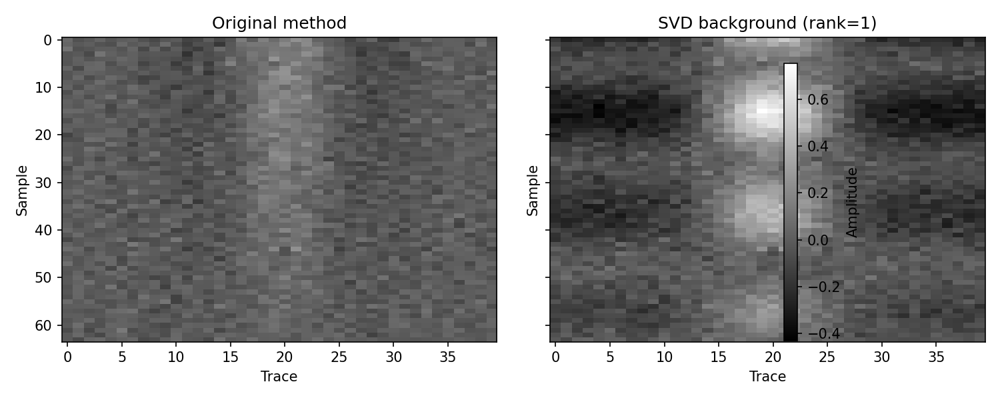
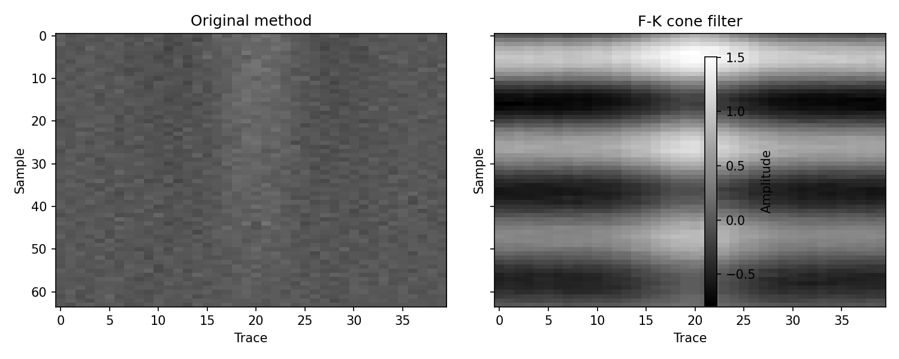
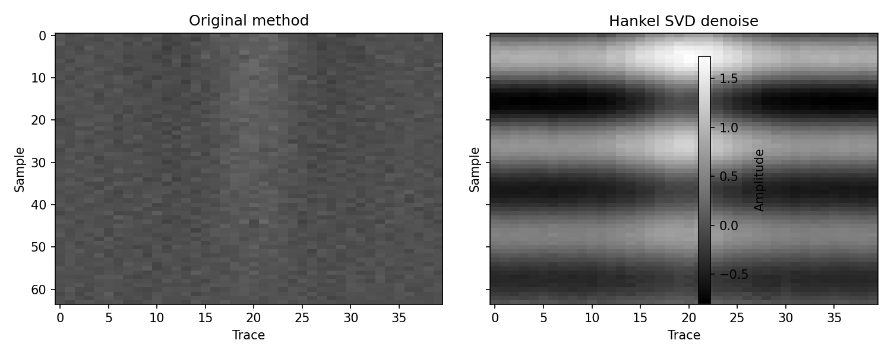

探地雷达组会汇报
方法-结果-结论（极简版）
- 目标：少字大图，只保留可决策信息
- 数据：同批次 B-scan，对比口径一致
方法（Method）
- 去背景 → 增益（SEC/AGC）→ 滤波/成像
- 同色标、同量程、同窗长，保证可比性

截图引用：shared/processing_flow.jpg
结果1：背景抑制

结论：水平条纹明显下降，弱目标边缘更清晰（截图：reports/compare_svd_background.png）
结果2：增益与滤波


结论：深层可见性提升，事件连续性更好（截图：reports/compare_fk_filter.png, reports/compare_hankel_svd.png）
结论（Conclusion）
- 方法有效：可见性↑、条纹噪声↓、可解释性↑
- 当前最稳组合：SVD 去背景 + 适度增益 + 频域抑噪
- 下一步：参数模板固化 + 多场景定量评估（SNR/对比度）
一句话：先“看清楚”，再“量准确”。